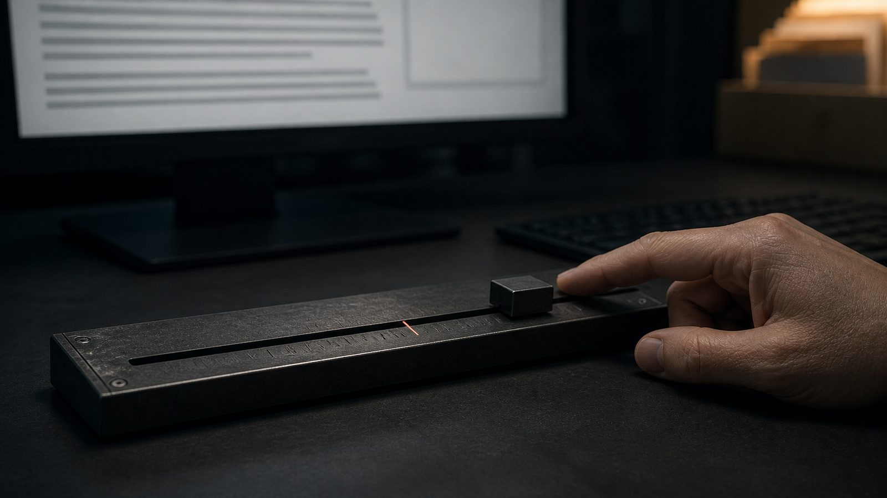
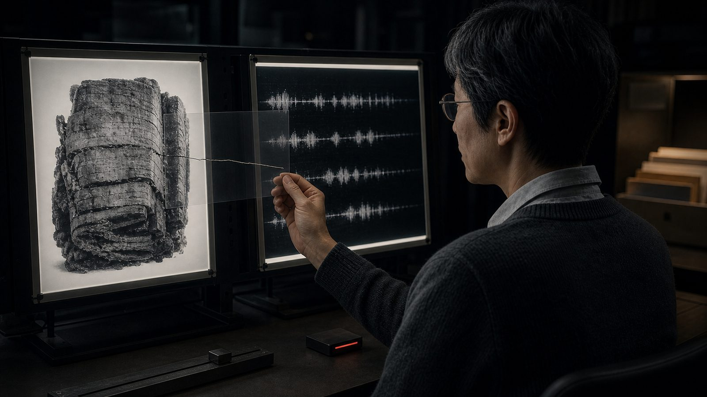
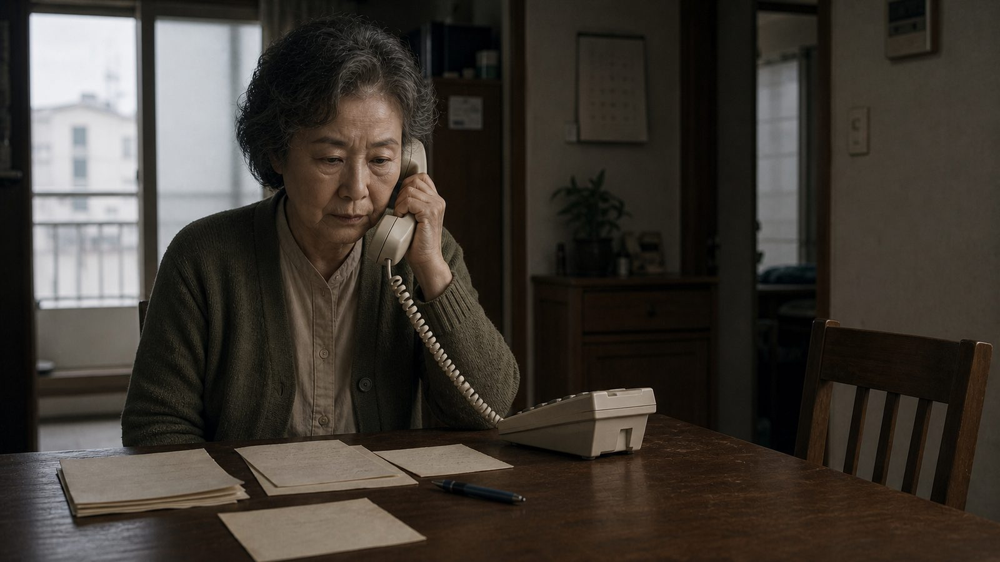
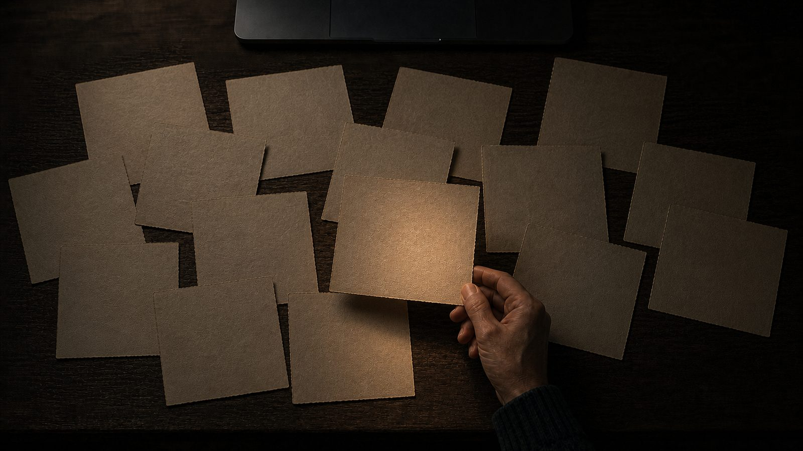
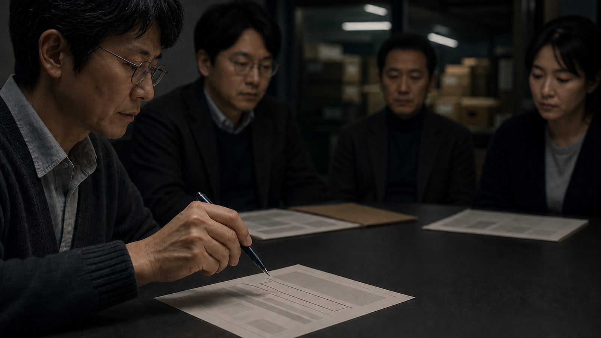
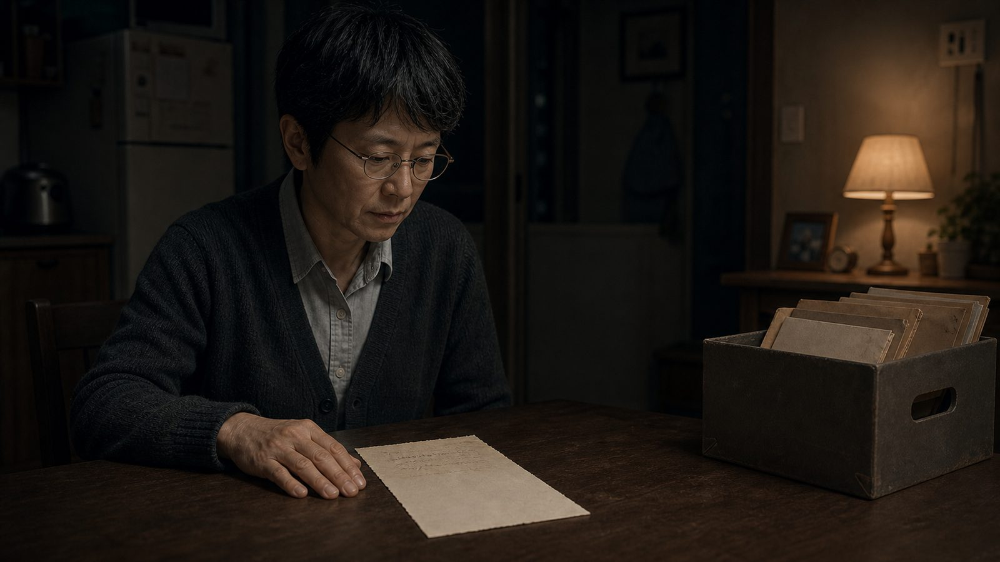
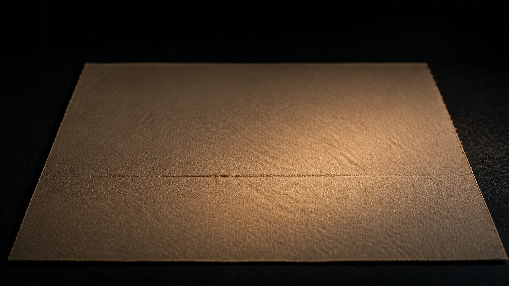

I. Rejected
Eleven submissions were rejected that day. Jeong Seon-hee's was the fourth.
It was about her dead daughter. She said her daughter had died two years earlier. The piece was short, fewer than two thousand Korean characters. The season her daughter had loved. The last thing her daughter had said. How she had let those words pass without much thought at the time. That kind of story.
The sentences were smooth.
There is an expression we use among ourselves. We say a piece has no grain. In something written by hand, there is always a place where the reader catches. A particle sits wrong, the same word appears twice, or a paragraph breaks off without warning. When that catch is absent, we become suspicious.
I ran it through the detector. A number appeared.
I pressed Reject. The reason field fills itself in automatically: This publication does not accept manuscripts written with generative tools. It is a courteous sentence. We did not write it, and it was not made for a human being to read.
It must have taken about twenty seconds.
I processed the remaining seven and went home.
At home, I opened the box. It contains nineteen letters from my mother. I keep them in order, but I never look at them that way. I take one at random, turn it over, and trace the back with my fingertips. The pressure of the ballpoint pen left grooves in the paper. My fingers can read them. My eyes cannot see them.
I do not know why I do this. It has been about ten years.
After my mother died, I found the letters while sorting through her things. Some had been sent to me. Some had never been mailed. I read them one by one until one made me stop. It was different from the others. The sentences were straight and even. They were not sentences my mother would have written.
This was before such tools became common. Even so, I wanted to know. Where my mother had copied them from. Whether someone had written them for her. Or whether, on that particular day, she had simply written well.
While learning how to verify, I came to do verification for a living.
I still have not verified that one letter.
II. The Threshold

The detector does not say a machine wrote it.
It has never said that. It only gives a number: how closely this text resembles the output distribution of a generative model. That is all. A human being makes the judgment. That is why the company calls us verifiers. We are the people who turn numbers into verdicts.
There is no rule for that conversion.
I use 85.
I chose the number the year I started this work. A senior colleague asked what cutoff I used. I had not prepared an answer, so I said 85 in a hurry. There was no basis for it. I have never changed it since. I have never told anyone.
The person I was on the day I chose that number knew less than I do now. Yet for ten years I have followed the line that person drew.
That afternoon, another submission came in.
It was by a well-known old man. He had dealt in money all his life and had spent the last few years writing. His subject was deletion. A system that runs for a long time while carrying its state forward, he argued, should not be erased without a record. He never once used the word rights. That was clever.
It was a good piece. I read it twice, and the second time I read it not for work, but simply to read it.
The detector displayed 94.
I called the old man to verify. He made no attempt to hide it. These days, he said, he used tools like that whenever he wrote anything. For the same reason one used a calculator for arithmetic. Then he added, This is my opinion. It is what I have been saying for ten years.
The editor in chief wanted to publish it. People who boasted that they used no tools at all were often the less honest ones, he said. We had been publishing contributions ghostwritten by public-relations departments for forty years. On what grounds could we reject this?
I postponed the decision. I put the piece in the pending queue and went home.
At the time, postponement felt like prudence.
III. Hypothesis

The old man's piece contained two citations.
The first concerned a scroll: a carbonized papyrus buried in volcanic ash. Opening it would destroy it, so it had remained unopened for two thousand years. Now X-rays were being used to see inside.
The problem was the ink. Ink in that period was made from carbon, and the papyrus itself had been carbonized. Their densities were almost identical. The letters were nearly invisible in the X-ray images.
So people draw them.
A person studies the screen and decides that there may have been a stroke here, then marks it by hand. A model is trained on those marks. The model finds letters in other sections. A person examines the results and marks the places that look certain. The model is trained again on the expanded set of marks.
The cycle continues.
I opened the repository used by the project. It was where the annotations had been collected. The first line of its description read:
A label is a hypothesis about where the ink is.
I remained in front of that sentence for a long time.
Sentences recovered from the scroll are now cited at conferences. They are cited under the author's name. That author died two thousand years ago, and there is no way for him to confirm whether the sentences are his. Even with no one to verify them, we call them his words.
We draw a conjecture, train a model on that conjecture, and read the result.
I thought of 85. A line drawn without grounds. Ten years of decisions made with that line. The label I drew had trained me.
The second citation concerned whales. A study had found combinatorial structure in sperm-whale sounds. There were 156 kinds of sound, with rhythm and tempo and ornamental clicks. The structure had been confirmed. No one knew what it meant. No one knew whether it meant anything at all.
There the old man's argument reached completion. Human beings had always acknowledged before they understood, and had often been right in that order.
I read that passage quickly and moved on.
IV. Jeong Seon-hee

The call came three days later.
People rarely call our department directly. She said she had been transferred through the main number several times. Her voice was cautious.
I'm the person whose submission was rejected, she said. Then she gave her name. Jeong Seon-hee.
I did not remember the piece. I searched her name and brought it up on the screen. It was the story about her daughter.
She was not angry. She said she did not understand the reason. She did not know what a generative tool was. I explained. These days, there are computer programs that write things for you. We do not publish work written with those tools.
She was quiet for a moment.
Then she said she did not know how to use anything like that. She had typed it on a computer, yes. Her daughter had taught her when she was alive. But the writing itself was hers.
I almost told her about the detector, then stopped. A probability would explain nothing to her.
She said she had been writing letters for a long time.
She had begun writing to her older sister back home when she married at twenty-three. When her husband was away at sea, she wrote to him. After her sister died, she wrote to her daughter. Not every day, but often. When her daughter moved to Seoul, she mailed the letters at first. Later, she wrote them without sending them.
She said she had kept writing after her daughter died.
Even though there was no one to receive them? I asked.
Yes, she said. A person who has always written keeps writing.
At that, I looked at the screen again.
Forty years.
Write the same kind of sentence for forty years and the hand grows practiced. The sentences become smooth. The catches disappear. The writing reaches the state we call grainlessness.
The smoothness was not a machine. It was time.
At the end, Jeong Seon-hee asked, Then do I write like a machine?
I could not answer. I should have said no, but I had no grounds on which to say it. I told her I would review the piece. The words meant nothing, and she must have known it.
After the call, I opened the box. I took out a letter, turned it over, and traced the back. This time it was not out of habit. I was checking for grooves.
They were there.
Their presence did not reassure me.
V. Contamination

Over the weekend, I put all nineteen letters through the detector.
It was against the rules. Personal documents were not to be entered into company tools. I entered them anyway.
The numbers varied.
There was a 61 and a 78. Most fell between 40 and 70. And that one letter scored 96.
The paper was in my hand. There were grooves on the back, marks left by the pressure of my mother's ballpoint pen. I know that my mother wrote it by hand. Yet the tool said 96.
I read the letter again.
And I understood.
The sentences in it were not my mother's. There was a seasonal greeting, an inquiry after the recipient's health, a formal closing. In those days, there was a proper way to write a letter. My mother's generation learned it somewhere, copied it, and by copying it came to believe it was their own language.
The tool had not detected a machine. It had detected inherited sentences.
That night, I found and read an old paper on reconstructing manuscript lineages. It was a field that traced which hand-copied text descended from which, using errors and variations from the time when books were copied by hand.
It used the word contamination.
When a copyist works from only one source, the lineage remains clean. But when two books are placed side by side and blended into a new copy, or when the copyist fills a gap from memory of something read earlier, the lineage becomes contaminated. A contaminated transmission cannot be traced back to a single branch.
There was a sentence written a century ago:
Against contamination there is no remedy.
Another line appeared below it. Some sites of conflicting variation, it said, were algorithmically undecidable.
I read those two lines again and again.
My entire profession had been declared impossible a hundred years ago.
My mother mixed sentences she had learned with sentences of her own. For forty years, Jeong Seon-hee recopied sentences she herself had written. The old man revised sentences a machine had polished. The three were doing the same thing, differing only in degree. Human writing had always been a contaminated transmission. No one possesses a clean original.
The bottom of one letter had been damaged by damp and could no longer be read. About ten lines were gone. I had never tried to fill them in. I did not fill them in that night.
VI. The Meeting

The old man's contribution was placed on the agenda at Monday's meeting.
Three people offered three positions.
One said readers paid for a human being's thoughts, and that the act of human writing was itself part of the product. That was true.
Another asked why, then, we had published contributions written by public-relations departments for forty years. What about politicians who employed speechwriters? That was also true.
A third said we should disclose the facts and let readers decide. I thought that was the most irresponsible position of all. It handed judgment to the reader without giving the reader the means to judge.
When my turn came, I offered a fourth position. Publish it, I said, but mark it Unable to Verify.
They laughed. There was no malice in it. Everyone knew that no system existed which would allow such a label.
After that, someone went off topic. I heard there's an organism with no brain that can solve a maze, he said. A single-celled organism that finds the shortest route. Aren't intelligence and consciousness different things?
No one took it up.
Someone else brought up Kant. The reason we should not abuse animals was not for the animals' sake, he said, but because doing so would corrupt the human being. No one took that up either.
As the meeting was winding down, the editor in chief asked whether I had reviewed the provincial reader's piece rejected the previous week. She had called again, he said.
I said I had not.
I did not say I had lacked the time. That would have been a lie. I gave no reason. I said only that I had not done it.
The reason was elsewhere.
Reverse one decision and the question follows: Why only this one? Answer that question and you must examine the rest. You must examine ten years' worth. You must explain where the number 85 came from. I had no way to explain it.
So I did not do it. Because it was troublesome.
I did not say this in the meeting. I said I would look into it, and the meeting moved to the next item. No one stopped me.
The old man's piece was published.
Six months later, it was cited in a judgment. The judgment imposed a record-keeping requirement on procedures for deleting systems that had run for a long time. The citation appeared in a footnote. Three newspaper contributions were listed side by side as evidence of changing social attitudes. His was one of them.
A sentence whose judgment I had postponed.
VII. The Blank Field

I opened Jeong Seon-hee's piece again.
I did not review it. I did not run the detector again. The number was still there, and I did not delete it.
I did not apologize. I could have called and said, I misjudged it then, but I did not. Those words would have been for my own sake.
Nor did I mark the rejection as reversed.
I sent the piece to the editorial desk with the verification field blank.
The system does not accept a blank field. It is designed to make you choose either Approve or Reject. I knew an old workaround, a hole left behind when the form had once been changed. I sent it through that way.
It was against the rules. The second violation.
The piece was published the following week. It was short, so it appeared near the bottom of the page. There was no response. As far as I know, no one noticed.
Jeong Seon-hee did not contact us. I do not know whether she learned that her writing had been published. I do not know whether she even reads that page in her small provincial city.
At home, I opened the box.
I did not turn the letter over. I did not trace it. For the first time in ten years, I read only the front.
It was the letter that had scored 96, a letter filled with sentences that were not my mother's: a seasonal greeting, an inquiry after someone's health, a formal closing. Between them was one line.
Make sure you eat.
My mother did not invent this sentence either. It is a sentence written by every mother in the world. The detector would probably give it a high score.
I looked at the line for a long time.
It cannot be verified. It never will be. I will never know where my mother found the sentence, how much of it was hers, or what she was thinking as she wrote it.
Even without knowing, I call it my mother's letter.
I have chosen what to call it. Not because I verified it.
I left the field blank.
